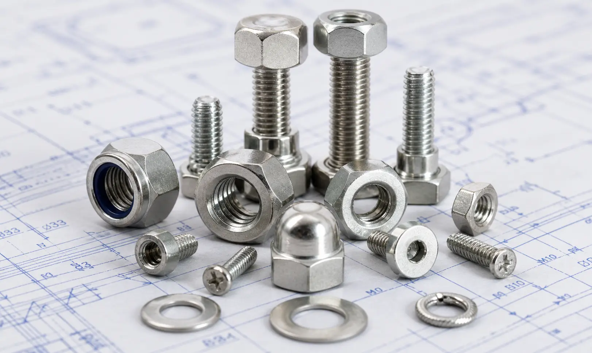

Gururaj Infradesigns supplies Stainless Steel Fasteners in SS 201, 202, 304, 304L, 316, 316L, 310, 317, 321, 347, 410, and 904L grades for construction, marine, chemical, petrochemical, and industrial fastening applications.
Gururaj Infradesigns is a trusted Stainless Steel Fasteners Manufacturer in India, supplying a comprehensive range of industrial fastening solutions for construction, engineering, petrochemical, marine, power generation, and infrastructure projects. Our stainless steel fasteners are manufactured using premium-quality raw materials and are designed to provide excellent mechanical strength, dimensional accuracy, and long-term corrosion resistance in demanding service conditions.
As a leading Stainless Steel Fasteners Supplier in India, we offer fasteners in various grades including SS 201, 202, 304, 304L, 316, 316L, 310, 317, 321, 347, 410, and 904L to meet diverse industrial requirements. These fasteners are widely used for assembling equipment, securing structural components, connecting piping systems, and supporting heavy-duty industrial installations where reliability and durability are essential.

Stainless Steel Fasteners are mechanical components used to join, secure, and assemble two or more parts in industrial and structural applications. Manufactured from corrosion-resistant stainless steel grades, these fasteners offer excellent resistance to rust, chemicals, moisture, and temperature variations, making them suitable for both indoor and outdoor environments.
At Gururaj Infradesigns, we supply stainless steel fasteners in multiple sizes, thread types, and configurations to support various engineering and fabrication requirements. Their combination of strength, durability, and corrosion resistance makes them one of the most widely used fastening solutions across modern industries.
| Parameter | Details |
|---|---|
| Product Name | Stainless Steel Fasteners |
| Product Types | Hex Bolts, Stud Bolts, Anchor Bolts, U Bolts, Hex Nuts, Washers, Socket Head Bolts |
| Material Grades | SS 201, SS 202, SS 304, SS 304L, SS 316, SS 316L, SS 310, SS 317, SS 321, SS 347, SS 410, SS 904L |
| Standards | ASTM, ASME, DIN, ISO |
| Thread Type | Metric, UNC, UNF, BSW |
| Size Range | M3 to M100 & Custom Sizes |
| Surface Finish | Plain, Bright, Polished, Passivated |
| Manufacturing Process | Hot Forged, Cold Forged, Machined |
| Certification | EN 10204 3.1, Third Party Inspection Available |
Stainless Steel Hex Bolts are among the most widely used fastening components in industrial and structural assemblies. Their six-sided head design provides strong tightening capability and secure load-bearing performance for machinery, steel structures, and fabrication projects.
Stud Bolts are threaded rods designed to be used with nuts on both ends, creating high-strength joints in flanged piping systems and pressure equipment. They are commonly used in refineries, petrochemical plants, and power generation facilities.
Stainless Steel Hex Nuts are precision-engineered fastening components used alongside bolts and threaded rods. They help create strong and vibration-resistant connections while providing excellent resistance to corrosion and environmental exposure.
Washers are used to distribute fastening loads evenly and protect the assembled surface from damage. They help improve joint stability, reduce wear, and minimize loosening caused by vibration or repeated mechanical stress.
Socket Head Bolts feature a compact cylindrical head with an internal hex drive, making them ideal for applications where installation space is limited. Their high-strength design is widely preferred in machinery, automation systems, and precision engineering.
Anchor Bolts are designed to secure structures, machinery, and support systems to concrete foundations. Their robust construction and corrosion-resistant properties make them suitable for industrial, infrastructure, and construction projects.
Stainless steel fasteners manufactured in 304 and 304L grades are widely used in fabrication, food processing, pharmaceutical equipment, and general industrial applications due to their excellent corrosion resistance and versatility. Industries seeking reliable fastening solutions often prefer SS 304 Fasteners Manufacturers for applications requiring durability, ease of fabrication, and long service life in moderate corrosive environments.
For marine, chemical processing, and coastal applications, SS 316 Fasteners Manufacturers supply fasteners with enhanced resistance to chlorides and aggressive chemicals. The addition of molybdenum improves corrosion performance, making these grades suitable for offshore structures, water treatment facilities, and chemical plants where reliability is critical.
Stainless Steel 321 Fasteners Manufacturers provide titanium-stabilized fasteners specifically designed for elevated temperature applications. These fasteners maintain excellent strength and resistance to intergranular corrosion, making them suitable for heat exchangers, exhaust systems, refineries, and thermal processing equipment.
For applications requiring exceptional strength and hardness, 17-4 PH Fasteners Manufacturers in India offer precipitation-hardening fasteners that combine high mechanical properties with good corrosion resistance. These fasteners are commonly used in aerospace, petrochemical, marine, and precision engineering applications.
15-5 PH Fasteners Manufacturers in India are widely used in critical engineering applications where high strength, toughness, and reliability are essential. Their excellent mechanical performance makes them suitable for aerospace assemblies, defence equipment, industrial machinery, and high-pressure systems.
| Grade | Corrosion Resistance | Strength | Typical Applications |
|---|---|---|---|
| 304 | Excellent | Good | General Engineering |
| 316 | Superior | Good | Marine & Chemical Plants |
| 321 | Excellent | High | High Temperature Service |
| 347 | Excellent | High | Boilers & Pressure Vessels |
| 410 | Moderate | High | Mechanical Components |
| 904L | Exceptional | Good | Chemical Processing |
| Fastener Type | Primary Use | Common Industries |
|---|---|---|
| Hex Bolts | Used for joining structural components, machinery, and equipment assemblies requiring strong load-bearing connections. | Construction, Engineering, Manufacturing |
| Stud Bolts | Designed for flanged joints and pressure-containing systems where secure fastening and easy maintenance are required. | Oil & Gas, Petrochemical, Power Plants |
| Hex Nuts | Used with bolts and threaded rods to create secure and vibration-resistant fastening assemblies. | Industrial Equipment, Fabrication |
| Washers | Help distribute load evenly, protect mating surfaces, and reduce loosening caused by vibration. | Mechanical, Structural, Process Industries |
| U Bolts | Primarily used for securing pipes, tubes, and round structures to support systems and frameworks. | Piping, Infrastructure, HVAC |
| Anchor Bolts | Used to fix machinery, structures, and support systems firmly to concrete foundations. | Construction, Industrial Plants |
| Socket Head Bolts | Preferred for compact assemblies where high strength and precise fastening are required in limited spaces. | Automation, Machinery, Precision Engineering |
Stainless steel fasteners are available in various configurations to meet the fastening requirements of different industrial applications. Selecting the correct fastener type helps improve structural stability, operational safety, and long-term performance of the assembled system.
Stainless steel fasteners are widely used in pipelines, storage facilities, offshore platforms, and refinery equipment where secure fastening and resistance to corrosive environments are critical. Their durability helps maintain the integrity of high-pressure systems and critical infrastructure.
Chemical processing facilities rely on stainless steel fasteners for equipment, reactors, piping systems, and storage tanks exposed to aggressive chemicals and challenging operating conditions. Their corrosion resistance helps ensure long-term performance and operational safety.
Fasteners manufactured in corrosion-resistant grades such as SS 316 and SS 316L are commonly used in shipbuilding, ports, offshore structures, and coastal installations. These fasteners provide reliable performance in environments exposed to moisture, humidity, and salt-laden air.
Stainless steel fasteners play an important role in commercial buildings, bridges, industrial structures, and public infrastructure projects. Their strength, durability, and low maintenance requirements make them suitable for both structural and architectural applications.
Gururaj Infradesigns is a trusted Stainless Steel Fasteners Stockist in India, maintaining a ready inventory of industrial fasteners in various grades, sizes, and specifications to meet urgent project requirements. Our stock includes hex bolts, stud bolts, anchor bolts, U bolts, hex nuts, washers, and socket head bolts suitable for construction, engineering, marine, petrochemical, and manufacturing applications.
As a reliable SS Fasteners Supplier in India, we serve customers across diverse industries with consistent product quality, competitive pricing, and timely delivery. Whether the requirement is for standard fastening solutions or bulk industrial orders, we ensure dependable supply support and stainless steel fasteners that meet demanding performance and durability requirements.
At Gururaj Infradesigns, quality is an integral part of our manufacturing and supply process. Our stainless steel fasteners are produced using quality-tested raw materials and are inspected for dimensional accuracy, thread quality, and overall performance to ensure dependable service in industrial applications.
As an ISO Certified Company, we are committed to maintaining consistent quality standards and delivering reliable stainless steel fastening solutions that meet the requirements of diverse industries.
Selecting the right fasteners is essential for ensuring the safety, reliability, and longevity of industrial systems. Gururaj Infradesigns offers a wide range of stainless steel fastening products designed to meet diverse application requirements across construction, process industries, infrastructure, and engineering projects. Our commitment to quality, dependable supply, and customer satisfaction helps businesses source fastening solutions with confidence. Contact Gururaj Infradesigns today for pricing, technical support, and bulk order requirements.